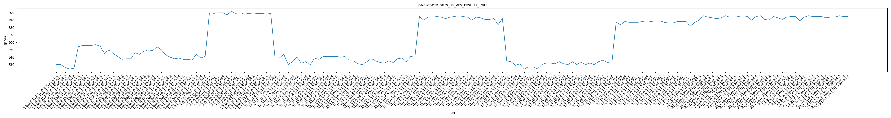
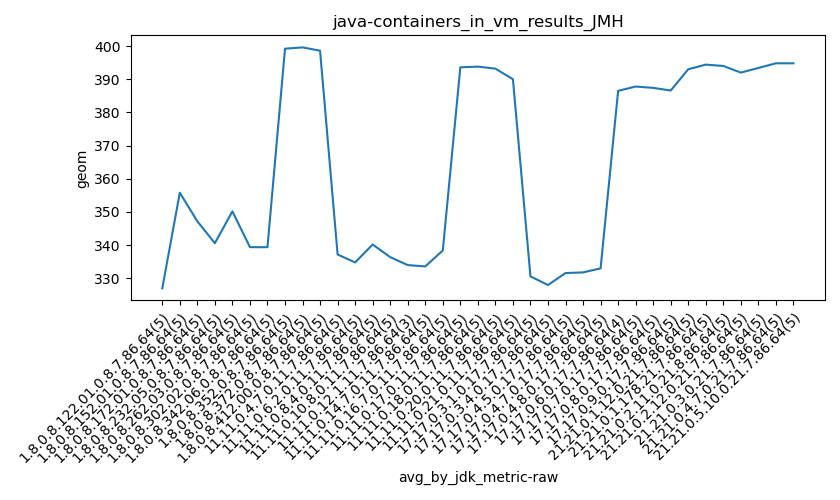
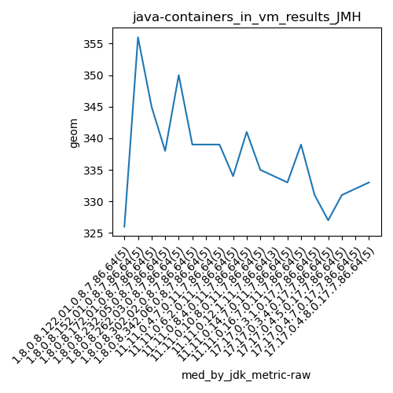
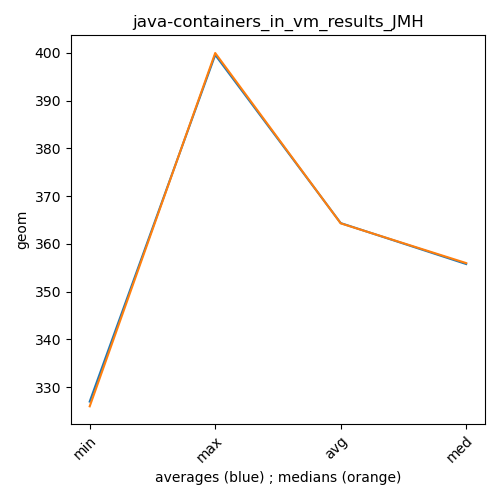

java- JMH
Context at bottom
/home/jvanek/git/benchmarks-in-nested-virtualisation-toolchain/final_results/containers_in_vm_results/containers_in_vm_results_JMH
java-
JMH
containers_in_vm_results_JMH
final score
Expected number of java- JDKs: 37
1st avgmed_alljdks_metric:
/home/jvanek/git/benchmarks-in-nested-virtualisation-toolchain/final_results/result_processing.py /home/jvanek/git/benchmarks-in-nested-virtualisation-toolchain/final_results/containers_in_vm_results/containers_in_vm_results_JMH geom False
values: [330, 330, 326, 324, 325, 354, 356, 356, 356, 357, 355, 345, 350, 345, 341, 337, 338, 338, 346, 344, 348, 350, 349, 354, 350, 343, 340, 338, 339, 337, 337, 336, 344, 339, 341, 400, 399, 400, 400, 397, 402, 399, 400, 398, 399, 398, 399, 399, 398, 399, 339, 339, 344, 330, 334, 340, 332, 334, 329, 339, 337, 341, 341, 341, 341, 340, 341, 335, 335, 331, 330, 334, 338, 335, 333, 332, 335, 333, 338, 339, 334, 341, 340, 395, 390, 394, 394, 395, 394, 392, 394, 395, 394, 395, 394, 390, 394, 393, 391, 391, 392, 384, 392, 335, 334, 329, 331, 324, 327, 327, 324, 330, 332, 332, 331, 334, 331, 330, 334, 330, 333, 330, 332, 330, 334, 336, 333, 332, 387, 384, 388, 387, 387, 387, 388, 389, 388, 389, 389, 387, 386, 386, 388, 388, 388, 382, 387, 390, 396, 394, 393, 392, 393, 396, 394, 394, 395, 394, 395, 390, 395, 396, 391, 390, 395, 393, 391, 394, 395, 395, 389, 394, 396, 395, 395, 395, 393, 394, 394, 396, 395, 395]

Expected number of iterations: 5
final number of values: 182 out of 185
Pass rate: 98.4%
values: (324, 402, 364.5879120879121, 356)

** accuracy from all jdks and runs
more is better
MIN: 324
MAX: 402
AVG: 364.5879120879121
MED: 356
Relative differences 1:
MIN-MAX: 19.0 %
MIN-AVG: 11.0 %
MIN-MED: 9.0 %
MAX-MIN: -24.0 %
MAX-AVG: -10.0 %
MAX-MED: -13.0 %
AVG-MED: -2.0 %
stored to java-.properties. sort | uniq that!
2nd avgmed_by_jdk_metric:
values: [327.0, 355.8, 347.2, 340.6, 350.2, 339.4, 339.4, 399.2, 399.6, 398.6, 337.2, 334.8, 340.2, 336.4, 334.0, 333.6, 338.4, 393.6, 393.8, 393.2, 390.0, 330.6, 328.0, 331.6, 331.8, 333.0, 386.5, 387.8, 387.4, 386.6, 393.0, 394.4, 394.0, 392.0, 393.4, 394.8, 394.8]

values: [326, 356, 345, 338, 350, 339, 339, 400, 399, 399, 339, 334, 341, 335, 334, 333, 339, 394, 394, 394, 391, 331, 327, 331, 332, 333, 387, 388, 387, 388, 393, 394, 395, 391, 394, 395, 395]

values: (327.0, 399.6, 364.37567567567567, 355.8)
values: (326, 400, 364.3243243243243, 356)

** accuracy from all jdks where runs were avged
more is better
MIN: 327.0
MAX: 399.6
AVG: 364.37567567567567
MED: 355.8
Relative differences 1:
MIN-MAX: 18.0 %
MIN-AVG: 10.0 %
MIN-MED: 8.0 %
MAX-MIN: -22.0 %
MAX-AVG: -10.0 %
MAX-MED: -12.0 %
AVG-MED: -2.0 %
stored to java-.properties. sort | uniq that!
** accuracy from all jdks where runs were medianed
more is better
MIN: 326
MAX: 400
AVG: 364.3243243243243
MED: 356
Relative differences 1:
MIN-MAX: 18.0 %
MIN-AVG: 11.0 %
MIN-MED: 8.0 %
MAX-MIN: -23.0 %
MAX-AVG: -10.0 %
MAX-MED: -12.0 %
AVG-MED: -2.0 %
stored to java-.properties. sort | uniq that!
/home/jvanek/git/benchmarks-in-nested-virtualisation-toolchain/final_results/containers_in_vm_results/containers_in_vm_results_J2DBENCH
java-
JMH
/home/jvanek/git/benchmarks-in-nested-virtualisation-toolchain/final_results/containers_in_vm_results/containers_in_vm_results_RADARGUNs3
java-
JMH
/home/jvanek/git/benchmarks-in-nested-virtualisation-toolchain/final_results/containers_in_vm_results/containers_in_vm_results_SPECJBB
java-
JMH
/home/jvanek/git/benchmarks-in-nested-virtualisation-toolchain/final_results/containers_in_vm_results/containers_in_vm_results_RADARGUNs1
java-
JMH
/home/jvanek/git/benchmarks-in-nested-virtualisation-toolchain/final_results/containers_in_vm_results/containers_in_vm_results_DACAPO
java-
JMH
pass rates:
containers_in_vm_results_JMH=98.4%
Context:
- containers_in_vm_results
- JMH